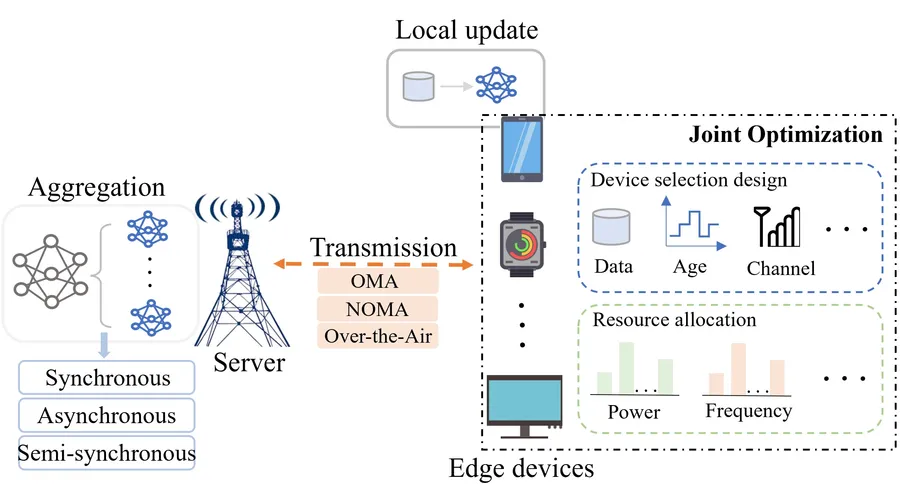

Communication-Efficient Edge AI
Federated, hierarchical, digital-twin-assisted, and task-oriented learning designs that reduce the cost of exchanging model updates over wireless links.
FL over NOMA (IEEE)Hierarchical FL (IEEE)Digital twin FL (IEEE)Digital twin FL (arXiv)Task-oriented FL (arXiv)
Read more
Edge artificial intelligence (AI), a fusion of edge computing and AI algorithms, has attracted significant research interest in recent years. Unlike traditional cloud-based AI, which relies on centralized processing of raw data, edge AI enables distributed data processing and decision-making directly at the device level, effectively mitigating the risk of data leakage. Edge AI also offers reduced latency and improved energy efficiency, making it well-suited for responsive applications such as industrial IoT, autonomous vehicles, and smart home systems. In edge AI systems, devices perform local model training using their own data and upload the trained model parameters to a coordinating server responsible for global model aggregation and distribution. However, the frequent parameter exchange between devices and the server poses challenges to communication and training efficiency, which are critical to the performance of edge AI systems.
Aims
- Communication-efficient Federated Learning (FL) and Hierarchical FL (HFL) over NOMA networks: strategies to optimize communication overhead.
- Digital-twin-assisted FL systems: leveraging digital twins to enhance training efficiency and improve resource utilization.
- Task-oriented edge AI systems: solutions tailored to diverse task requirements across devices to ensure strong performance and resource allocation.
Papers
- B. Wu, F. Fang, and X. Wang, “Joint Age-based Client Selection and Resource Allocation for Communication-Efficient Federated Learning over NOMA Networks”, IEEE Transactions on Communications, vol. 72, no. 1, pp. 179-192, Jan. 2024. IEEE Xplore
- B. Wu, F. Fang, X. Wang, D. Cai, S. Fu, and Z. Ding, “Client Selection and Cost-Efficient Joint Optimization for NOMA-Enabled Hierarchical Federated Learning”, IEEE Transactions on Wireless Communications, vol. 23, no. 10, pp. 14289-14303, Oct. 2024. IEEE Xplore
- B. Wu, F. Fang, and X. Wang, “Performance Optimization of Digital Twin Assisted Federated Learning over NOMA Networks Using Stackelberg Game”, the 2024 IEEE 100th Vehicular Technology Conference (VTC2024-Fall), 2024. IEEE Xplore
- B. Wu, F. Fang and X. Wang, “Stackelberg Game Enabled Performance Enhancement in Digital Twin-Assisted Federated Learning with Reputation-Aware Client Selection”, IEEE Transactions on Wireless Communications, 2025. IEEE Xplore
- B. Wu, F. Fang and X. Wang, “Optimizing Value of Learning in Task-Oriented Federated Meta-Learning Systems”, the 2025 IEEE International Conference on Communications (ICC-2025), 2025. arXiv